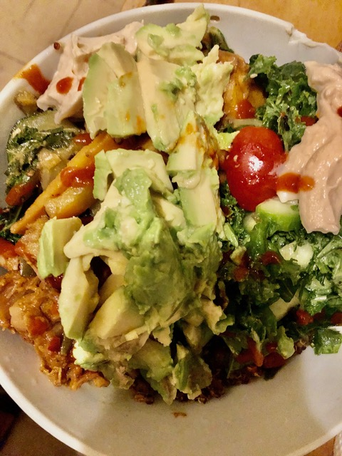

home
Warm your soul!

This meal was really fun to make, as you can see from my previous meal the girl loves herself some hot spicy food & avocado.
Mixed up some cooked food with those raw veggies.
Had no ideal concept on this one, just went with what felt right.
The levels of Foodtopia
Ingredients
- one half of a red onion
- 4 cloves of garlic
- Green Pepper
- Ginger
- Celery
- Cherry tomato
- Package of Jackfruit
- Avocadooooooooo
- Kale
- One cucumber
- Hummus
Please make sure to put extra care into cleaning your vegetables.
I usually soak them in warm water with baking soda, splash of vinegar & let them soak for 15-30 mins
Instructions
- First prep garlic, ginger, pepper, onion and celery by cutting it up as small & fine as you like
- Gather a pan and add whatever oil of choice if you don’t like oil add broth or just water
- Once pan is hot enough add in your chopped mise en place and let cook until translucent
- After add in your jackfruit, tomato and let that move around and get steamy, add your salt, pepper, extra spices now.
- After around 5/10 minutes add in your kale and let that steam with a lid on for 5 mins watching and stirring as you go.
- If food starts to stick add water and adjust the heat to a low heat.
- Once done time to assembly your plate.
- I added my jackfruit, tomato fry first then added in a nice salad on the side including fresh chopped kale, cucumbers add whatever fresh veggies you like.
- Add hummus & avocado and more heat if you like and there you have it !!!